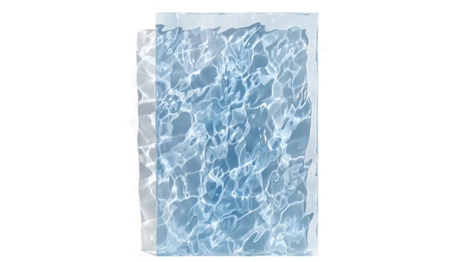

idea

Sophia Collier
http://www.sophiacollier.com/index.html-どんな人
カリフォルニア在住のアーティストです。水面を再現したアクリルのアート作品を制作しています。
-解説
プログラミングによって水面の曲面を計算し、大型のブラシのような機械で削って作られています。機械で削られた後はひたすらやすりがけ、ツヤ出し、エアブラシで着色などを行い、水の質感に近づけていきます。
-好きなところ
水面の一瞬をそのまま閉じ込めて作品にするという発想は、絵にしたり写真にしたりと、いろいろな作品があると思いますが、波をシミュレーションして立体に削り出す発想は面白いなと思いました。光の反射も水面そっくりで綺麗ですね。